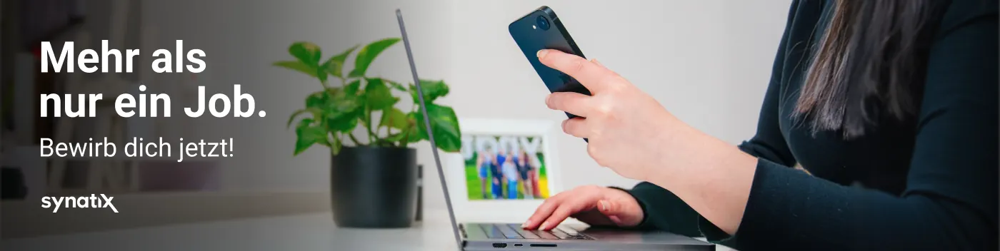
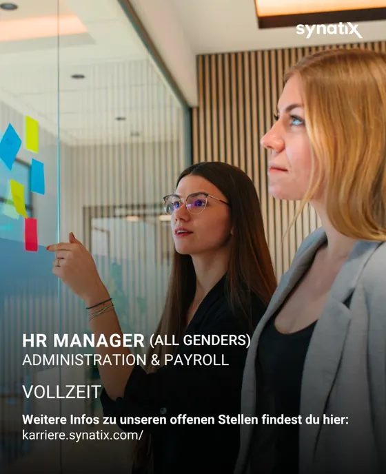
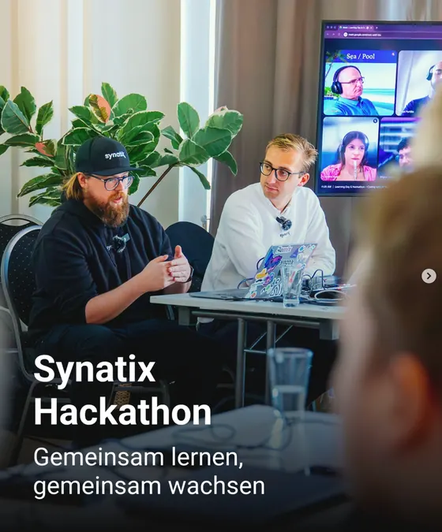
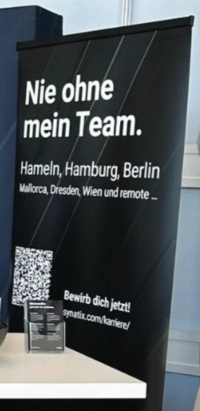
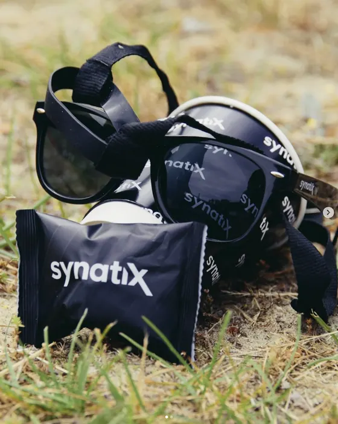

01 · Synatix · Employer Branding & Events
Ein Motiv,
viele Formate.

Für die Recruiting- und Eventkommunikation von Synatix habe ich Karriere-Header, Social-Media-Posts, Messe-Roll-ups und Give-aways gestaltet. Alle Formate folgen derselben Logik: dunkle Bildfläche, weiße Headline, ein kurzer Aufruf und das Synatix-Logo.
- Kontext
- Festanstellung, Creative-Works-Team bei Synatix
- Mein Teil
- Gestaltung aller hier gezeigten Motive
- Formate
- Web-Header, Social-Posts 4:5, Roll-up, Merch
- Zielgruppe
- Bewerberinnen und Bewerber, Messebesucher
So ist der Header aufgebaut
Drei Ebenen: Foto, ein Verlauf für die Lesbarkeit und darüber Typografie und Logo.
Rekonstruktion aus dem veröffentlichten Motiv. Die Originaldateien liegen bei Synatix.
Dasselbe Motiv in anderen Kanälen



